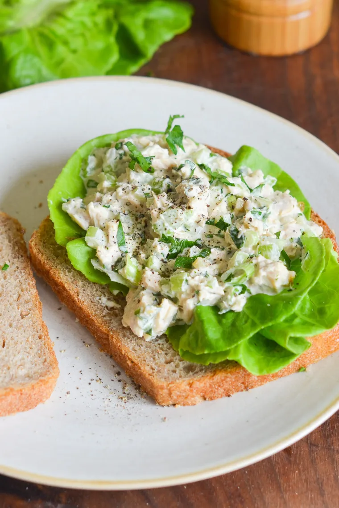

A Really Good Tuna Salad

A classic — and the only tuna salad recipe you’ll ever need.
INGREDIENTS
- 2 (5-ounce) cans chunk white tuna packed in water
- ½ cup mayonnaise, best quality such as Hellmann's or Duke's
- 2 ribs celery, finely diced
- 2 scallions, light and dark green parts, thinly sliced
- 1 tablespoon fresh lemon juice (from 1 lemon)
- ¾ teaspoon Dijon mustard
- 2 tablespoons sweet pickle relish, drained
- 3 tablespoons finely chopped flat-leaf parsley
- ¼ teaspoon salt
- ¼ teaspoon freshly ground black pepper
Steps
- Servings: 2 cups (enough for 4 sandwiches)
- Prep Time: 20 Minutes
- Total Time: 20 Minutes